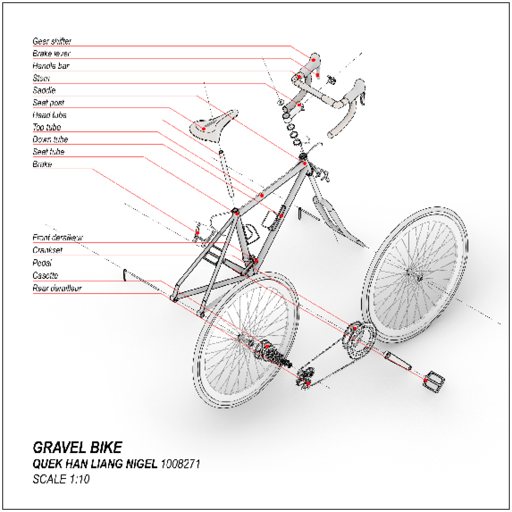
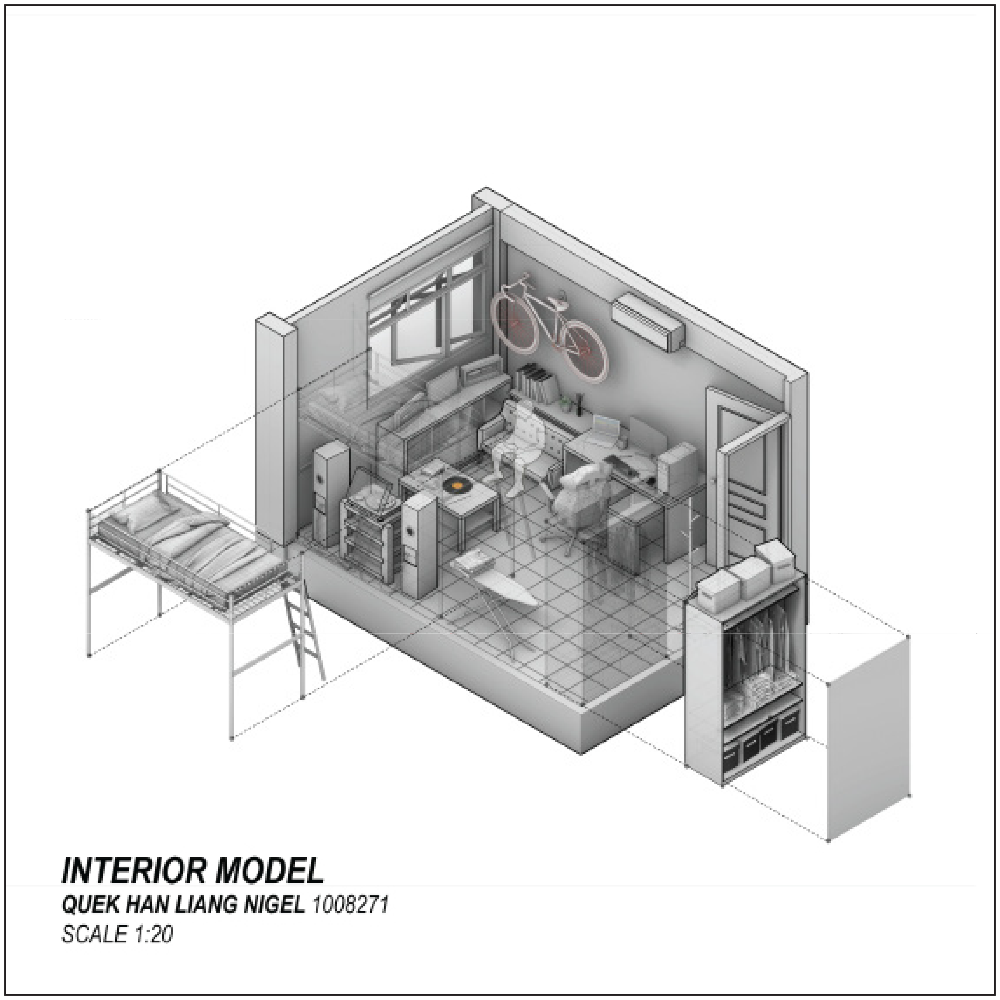
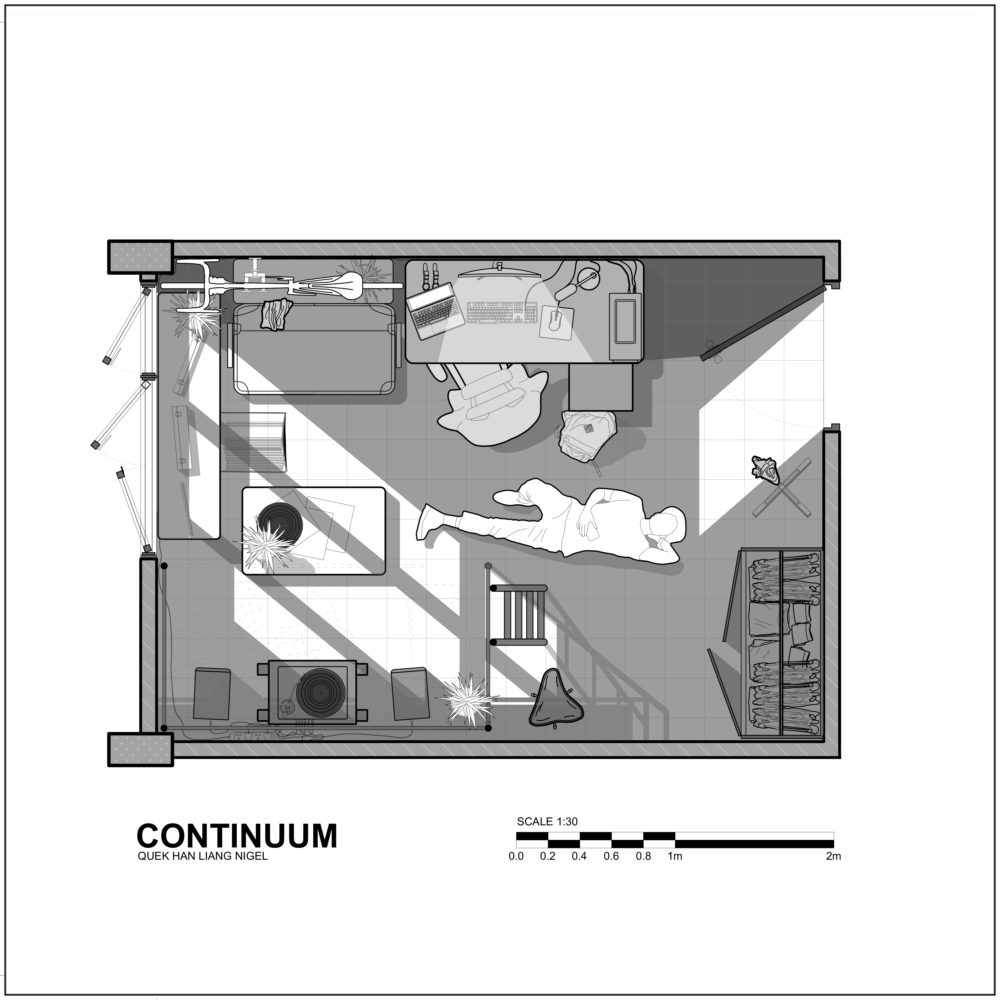
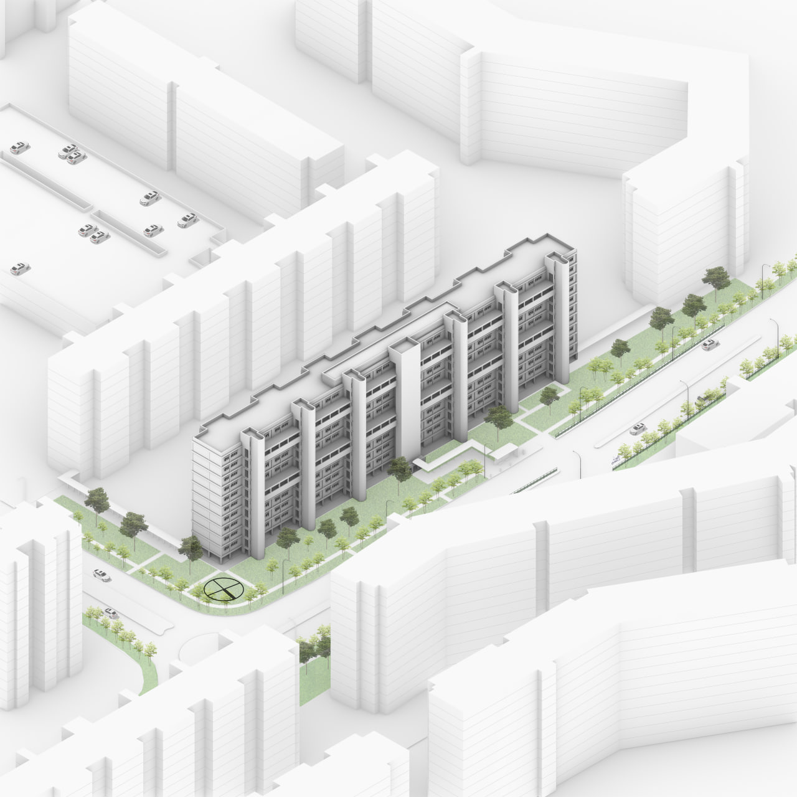

Continuum
Brief
A 3D modelling exercise exploring spatial representation across three scales — object, room, and building. Each scale builds upon the last, moving from the intimate detail of a personal object to the urban context of a residential block.
Object — Gravel Bike
An exploded axonometric drawing of my gravel bike, modelled at 1:10 scale. Every component — from the gear shifter and brake lever down to the crankset and rear derailleur — was individually modelled and annotated.

Gravel bike — Scale 1:10
Room — Interior Model
A detailed isometric model of my room at 1:20 scale, capturing the lived-in quality of the space — loft bed, bicycle hung on the wall, desk setup, bookshelf, and wardrobe. The plan view reveals the spatial organisation and how the room is inhabited.

Interior model — Scale 1:20

Plan — Scale 1:30
Building — Site Context
An isometric model of the residential HDB block within its urban context at 1:500 scale, showing the building's relationship to its surrounding streets, neighbouring blocks, and landscaping.

Site context — Scale 1:500